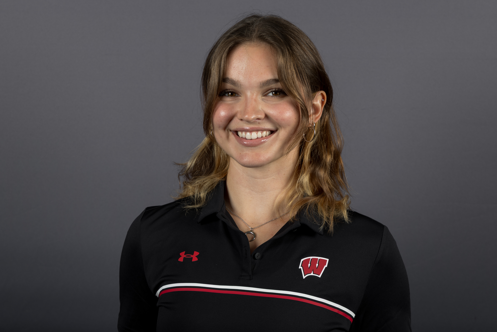

Mind The Algorithm
Implicit bias is stronger than you think!
About Us
Adeline Chvala
I'm majoring in Information Science, with certificates in Computer Science and Video Game Design. I also compete on the Women's Rowing Team. Outside of school, I enjoy painting and baking. I am taking this course because I am interested in understanding the disparities within the compting industry and why they happen. My favorite area of technology is video game development because it combines technology with creativity, design, and storytelling.

Sara Chennah
Sara info here
Mark Dorado-Zapata
Mark info here
Implicit Bias
Our Tech Heroes!
Tanya DePass
Adeline's Tech hero
Tanya is a cypheroftyr, game journalist, streamer, and activist. She is best known for founding the #INeedDiverseGames movemen of 2014. This later evolved to the Chicago-based non-profic I Need DIverse Games in 2016. This organization helps marginalized developers attend and partner with key industry events. The movement began with the hope to bring more diverse characters into the video game world, and support underrepresented people within the industry. This is very relevant to me because I hope to go into the video game industry after I graduate. Many main video game characters are strong white men, and I think it is critical to bring more diversity into the world of game design as it allows for more players to see themselves in games, and to have a wider representation in entertainment.